原文连接:https://www.cnblogs.com/zlt2000/p/11491776.html
原文链接：https://mp.weixin.qq.com/s/oI3Py2PZY31mA5iOOOd73g
本文来自CCTC2017大会孙玄的演讲。
大家都在提微服务架构，微服务架构到底是什么？它有哪些特点和设计模式？我们在打造微服务架构过程中，这些设计模式在实战当中如何应用？数据的一致性应该如何保证？今天我将针对上述疑问分享一下我的思考。
微服务架构特点
什么是微服务架构？看下图的这段英文，这是Martin Fowler 在2014年提出来的，微服务架构是一种架构模式，既然是架构模式，那么，它就必然需要满足一些特点。他提到，微服务架构是一系列小的微服务构成的组合，那么，什么是“小的微服务”？可能每个人的理解都不一样，大家都应该都知道SOA架构，SOA架构的粒度是比较粗的，到底我们应该以什么样的粒度拆分微服务？我认为，微服务架构本质上一个业务架构，那么对业务了解的越深刻，你的微服务拆分就越合理。
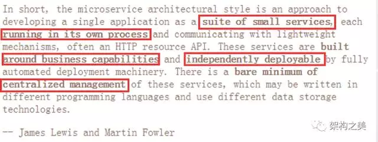
比如我们做二手交易平台（转转），该平台包括用户体系、商品体系、交易体系以及搜索推荐体系。因为各个体系比较独立，那么我们就可以按照各个业务模块来拆分微服务。当然，这样做还不够，因为你的商品里面还有很多功能，但是大的思路是按照具体商品内部的逻辑来进一步拆分。
第二，围绕具体业务建模。一切脱离业务场景谈微服务架构都是耍流氓。
方法有二：首先将某一领域的模型作为独立的业务单元：比如二手交易中的商品、订单、用户等；其次将业务的行为作为独立的业务单元：比如发送邮件、单点登录验证、push服务。
第三，整个微服务都可以独立地部署，因为每一个微服务Process都是独立的，所以按照每个模块进行独立的部署也是很容易理解的。
第四，去中心化管理。打造去中心化管理意思就是微服务的每个模块和开发语言、运行平台没有关系，开发语言可以是C++，可以是go，也可以是世界上最好的语言，运行的平台是Linux，Unix、Windows等都可以。
最后一点就是轻量级通信，这点很容易理解，通信和模块语言、平台没有关系。尽可能选用轻量级的通信来做这个事情，这样实施跨平台、跨语言的时候就很容易。
讲完这些特点，我们可以看一看一个标准DEMO级的微服务架构到底是由哪些元素组成的？如下图，主要包括网关、微服务、数据存储、注册中心、配置中心。
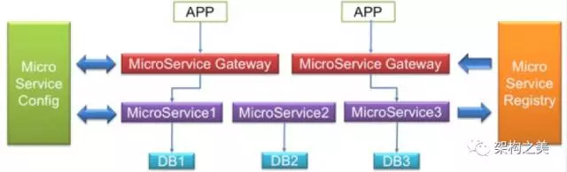
既然是DEMO级的，和实际情况下相比肯定有所差别。那么，实际案例中，我们到底应该如何做这件事情？这个例子也是最近我在做的二手交易平台——转转。这里和DEMO有些不一样的地方。前面的第一层还是网关，下面有微服务的聚合层，作用是做各种业务逻辑的处理；聚合层下面是我们的数据原子层，主要做数据访问代理，只不过根据业务的不同垂直分开了。可以看到，网关、数据层，注册中心、配置中心都有，只不过在业务处理部分分成两层：一层是原子层，也就是整个数据访问的代理层，提供了用户的接口；另外一层就是上层的业务聚合层。
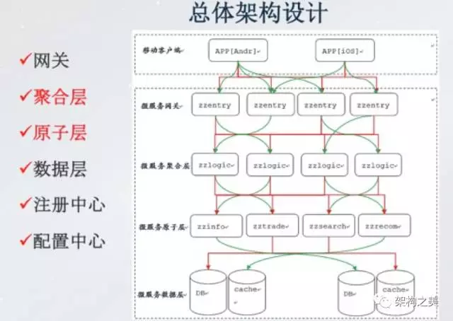
架构设计模式及实践案例
上面我大概讲了下微服务的一些特点以及DEMO级的微服务包括哪些部分以及实际案例中我们的设架构设计模式。那么，我们为什么要采用这种模式去做？除了这种架构模式之外还有哪些其它的架构模式？这里，模式还是非常多的，我会重点讲这几点：链式设计模式、聚合器设计模式和异步共享模式。
首先我们来说下链式设计模式，在这种模式下，APP前端请求首先要经过网关层，接下来连续调用两个微服务，调了微服务1之后还要调微服务2。为什么叫做链式呢？因为在调用过来以后先到微服务1，然后再同步地调用微服务2，微服务2会做一些处理，处理以后微服务2才会反馈给微服务1，微服务1再反馈给Gateway，最后反馈到APP。在实际业务场景中，涉及到交易和订单的业务场景都会用到这种模式。
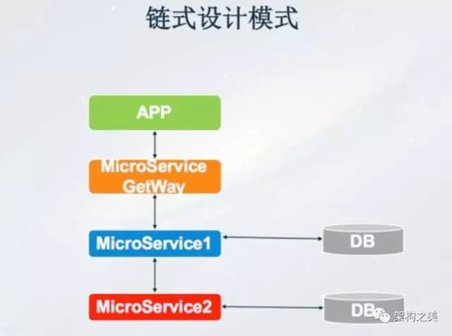
接下来是聚合器设计模式，APP前端一个调用请求经过Gateway，到达聚合层，需要调用三个微服务，聚合层将三个微服务的返回结果做一些聚合处理，比如可以进行一些排序或者去重，聚合之后再反馈到Gateway和APP前端，这是一个典型的聚合器设计模式。
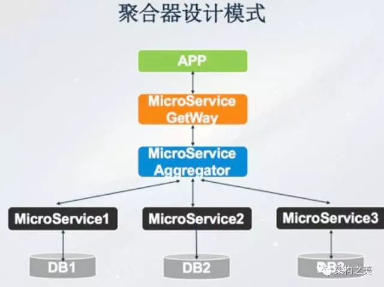
第三种模式是数据共享模式，这种模式相对比较简单，比如APP经过微服务网关，接下来调用微服务1和微服务2，理想情况下微服务1和微服务2都有自己独立的DB，但是有些情况下由于微服务1和微服务2的请求量和存储量较小，从资源利用率的角度来讲，这两个微服务的DB是共享的，因此这种就是数据的共享模式。
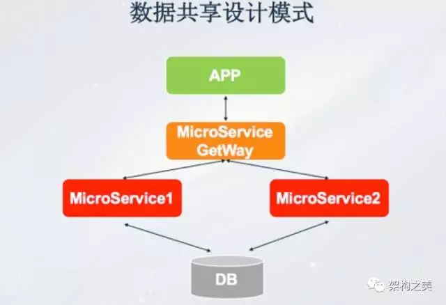
最后一种是异步消息设计模式，不管是链式设计、聚合器模式还是共享数据模式，架构模式都是同步模式。也就是说我的一个请求发出去必须等到每个环节都处理完才会给客户端。如果请求不需要关注处理结果，这时候可以异步来实施。APP更新请求经过微服务网关，持久化到MQ，写入MQ成功后马上Response给APP客户端，之后微服务根据需要从MQ里面订阅更新消息进行异步处理，我们为了提高吞吐量也会采用这种模式。
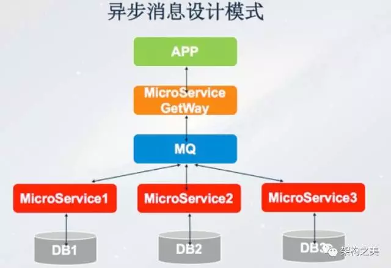
我从百度到转转这几年经历了很多业务场景，使用的无非就是聚合器、异步和数据共享的数据模式，特别是前面两个用得特别多，下面我们来看一些例子。
接下来我们看个例子，这是我们在2015年做的一个二手交易平台（转转），这个二手交易平台包括商品、分类搜索、关键词搜索、商品推荐等功能。一个用户请求过来，先经过网关，网关下面就是我们的聚合层，聚合层再去调用商品、交易、推荐以及搜索相关的，最终在聚合层把各个微服务原子层的结果汇总起来Response给到客户端。具体如下图所示：
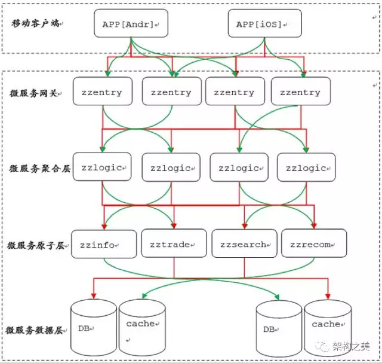
异步消息模式的这个案例比较早了，当时我们做了Feed 流，类似现在的微信朋友圈，这是我在百度做的事情。当时，我们采用的架构模式是异步架构模式。前面是我们的APP，经过了网关，到达异步提交层，可以认为是持久化功能的MQ。用户请求经过网关到消息异步提交层后就返回了，业务处理部分从MQ里面读取数据再进行异步处理。这个时候吞吐量会增加，但是会带来一定的困惑。比如这个时候我发了一条Feed，用户再一查就直接到数据库里面查，可能异步提交消息队列有延迟，查不到，用户就困惑了，这个问题怎么解决？我们就想能不能在前端帮我们做一些事情？比如提交了MQ返回Response 200以后，前段配合插入这条Feed。用户再次刷新时候我相信已经是好几秒以后的事情了，即使有延迟，这个消息早就被你的业务处理完了。当然，我们这里是有特定场景的，社区时候可以这样去做，但是涉及到和金融相关的场景肯定不会这么去做。
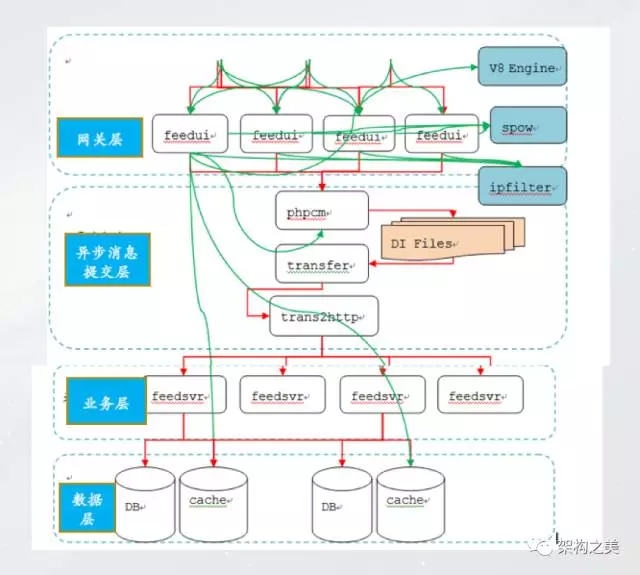
数据一致性实践
微服务模块比较分散、数据也比较分散，整个系统复杂性非常高，如何进行数据一致性实践？在一个单体模块里面可以做Local Transaction，但是在微服务体系里面就不奏效。虽然难解决，但是不能不解决，不解决的话微服务架构就很难实施。我们知道微服务中做强一致性性的事情是非常难的，今天分享的更多的是解决最终一致性。因为在微服务下基于不同的数据库，Local Transaction是不可用的。大家在在分布式事务里面一定听说过两阶段提交和三阶段提交，这种场景其实在微服务架构里面也行不通，原因是因为它本质上是同步的模式，同步的模式之下做数据一致性吞吐量降低的非常多。
我们的业务场景无非是两种：第一种是异步调用，就是一个请求过来就写到消息队列里面就行，这种模式相对简单。今天主要讲下同步调用的场景之下怎么打造数据的最终一致性。既然是同步调用场景，并且不能降低业务系统的吞吐量，那么应该怎么做呢？建立一个异步的分布式事务，业务调用失败后，通过异步方式来补偿业务。我们的想法是能不能在整个业务逻辑层实现分布式事务语义策略？如何实现，无非有两种，第一是在调正常请求的时候要记录业务调用链（调用正常接口的完整参数），第二是异常时沿调用链反向补偿。
基于这个思路，我们架构设计上的关键点有三，第一是基于补偿机制，第二是记录调用链，第三是提供幂等补偿接口。架构层面，看下图，右边是聚合器架构设计模式，左边是异步补偿服务。
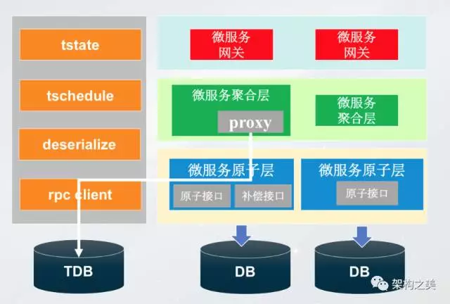
首先需要在聚合层引入一个Proxy。首先基于方法，在方法名加注解标注补偿方法名，比如：- @Compensable(cancelMethod=“cancelRecord”)
另外，聚合层在调用原子层之前，通过代理记录当前调用请求参数。如果业务正常，调用结束后，当前方法的调用记录存档或删除，如果业务异常，查询调用链回滚。
原子层我们做了哪些事情呢？主要是两方面，第一是提供正常的原子接口，其次是提供补偿幂等接口。
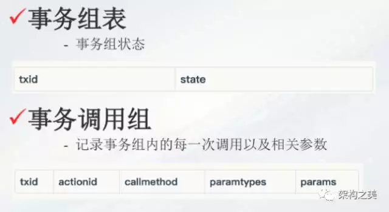
分布式事务关键是两个表（如上图），第一是事务组表，假设A->B->C三个请求是一个事务，首先针对ABC生成一个事务的ID，写在这个表里面，并且会记录这个事务的状态，默认的情况下正常的，执行失败以后我们再把状态由1（正常）变成2（异常）；第二个表是事务调用组表，主要记录事务组内的每一次调用以及相关参数，所以调用原子层之前需要记录一下请求参数。如果失败的话我们需要把这个事务的状态由1变成2；第三，一旦状态从1变成2就执行补偿服务。这是我们的补偿逻辑，就是不断地扫描这个事务所处的表，比如一秒钟扫一次事务组表，看一看这个表里面有没有状态为2的，需要执行补偿的服务。这个思路对业务的侵入比较小。
具体看下我们实际的例子，比如二手交易平台里面创建订单事务组的正常流程，从锁库存到减红包再到创建订单，创建事务组完毕之后开始调用业务，首先Proxy记录锁库存调用的参数，之后开始锁库存服务调用，成功后之后又开始减红包和创建订单过程，如果都成功了直接返回。
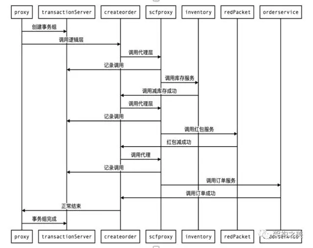
再看一下异常的流程，前面几步都是一样的，只是在调红包服务、Proxy创建红包的时候如果失败了就会抛出异常，业务正常返回，聚合层Proxy需要把事务组的状态由1改成2，这个时候由左边的补偿服务异步地补偿调用。

推荐阅读
- 日志排查问题困难？分布式日志链路跟踪来帮你
- zuul集成Sentinel最新的网关流控组件
- 阿里注册中心Nacos生产部署方案
- Spring Boot自定义配置项在IDE里面实现自动提示
- Spring Cloud Zuul的动态路由怎样做？集成Nacos实现很简单
- Spring Cloud开发人员如何解决服务冲突和实例乱窜？
扫码关注有惊喜！